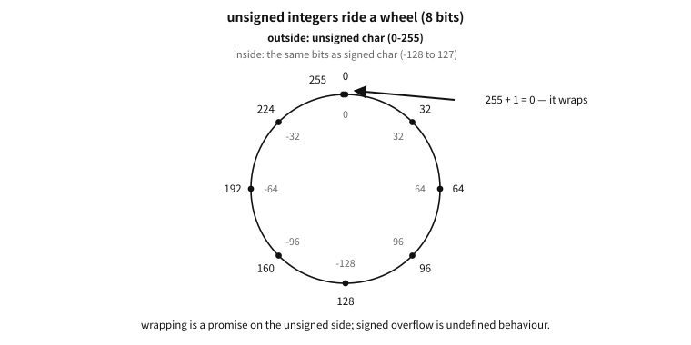
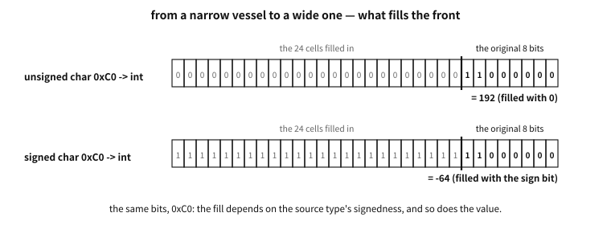

6 Representing integers — sign, overflow, shift
What to know first
Looking back
Chapter 3 said that several bytes are joined to hold a large number, and we even saw endianness (the order of storing). But every number so far has been zero or above. Negative numbers — where among the bits do you put the minus sign?
A. There is nowhere to put it — bits have only 0 and 1, no minus sign (chapter 2). So negative numbers too are made by agreement: we decide to read certain bit patterns as negative. That there was more than one way to make that agreement, and how the competition ended, is the heart of this chapter.
The need for this chapter, and its context
By the end of this chapter
The questions this chapter answers
- But why the name “complement”? And in “ones’ complement” and “two’s complement”, what do the one and the two refer to?
- Now that the representation is pinned to two’s complement, is signed overflow defined as wrap-around too?
- Is the shift important enough to justify learning the rules for pushing and filling?
- What happens if you push an eight-bit number eight places, or more? Common sense says everything is pushed out and it becomes 0.
- We filled it with a pile of ones and the value is unchanged? Is that a coincidence?
6.1 Unsigned integers — numbers that go round like a clock
First the world without any worry about minus signs. Read bits as a plain binary number and you hold numbers, from to (chapter 2). This is the unsigned integer. Eight bits give 0–255.
There is one property of this world you must take with you: the end joins back to the beginning. Add 1 to 255 and you get not 256 but — since there is no ninth bit to hold 256 — 0. It is the structure of a clock, where one hour after twelve is one. In mathematics this kind of arithmetic is called modular arithmetic.

Figure 6.1 — Outside, the value read as an unsigned char; inside, the same bits read as a signed char.
The inner ring answers something in advance — read the same bits as a signed type and the far side of the wheel becomes negative. That is the next section.
The mathematics. Modular arithmetic — the exact mathematics of finite numbers
Addition, subtraction and multiplication of -bit unsigned integers are exactly the operations that take the remainder of the result modulo :
In eight bits, . What matters is that this is not “wrong addition” but a different addition — a fully defined, predictable piece of mathematics. The C standard likewise defines unsigned overflow not as an error but as this arithmetic.
This circling has a name — overflow, or more precisely wrap-around. Defined behaviour though it is, it becomes an accident when it happens somewhere you did not expect.
In practice. The wall at level 256 — the Pac-Man kill screen
6.2 Three agreements for holding negative numbers
Now the negatives. The task is to agree to read about half of the -bit patterns as negative, and historically three agreements were actually used. We compare them by holding in eight bits.
First, sign-magnitude. It imitates human notation directly — use the leading bit as the minus sign (1 means negative) and hold the magnitude in the rest. is 1_0000101. Intuitive, but it costs two things. 00000000 (+0) and 10000000 (−0) mean there are two zeros. And the addition circuit is a headache — adding two numbers of different signs needs a separate procedure of “compare the magnitudes, subtract the smaller from the larger, and decide the sign.”
Second, ones’ complement. To make a number negative, flip every bit. is 00000101, so is 11111010. The addition circuit gets considerably simpler, but there are still two zeros (00000000 and 11111111) — and every comparison has to drag along the exception “the two zeros count as equal.”
Third, two’s complement. Flip the bits and add one. is 11111010 + 1 = 11111011. This rule looks arbitrary at first but is in fact the most elegant — there is only one zero and, above all, the unsigned addition circuit, used unchanged, gets signed addition right by itself. No separate procedure, no exceptions.
Q. But why the name “complement”? And in “ones’ complement” and “two’s complement”, what do the one and the two refer to?
A. A complement is “a number that fills something up to a given reference.” Decimal makes it easy to feel. For the three-digit number 304, the number that fills each digit up to 9 is 695, called the nines’ complement (in each position, ); the number that fills it up to 1000 is 696, the ten’s complement (). The relation between them is “nines’ complement + 1 = ten’s complement.”
Do the same thing in binary and the names unravel. The number that fills each position up to 1 — that is, subtracting from 11111111 — is the ones’ complement, and since in binary is just flipping the bit, that is where the rule “flip them” comes from. And subtracting from — binary’s “”, a power of two — is the two’s complement. The trick “flip and add one” is exactly the relation “nines’ complement + 1 = ten’s complement” in decimal.
A word on the English spelling. The usual forms are one’s complement and two’s complement (there is no “1s’” or “2s’”). But the computer scientist Knuth argued for a witty distinction — the first is a complement with respect to the ones in every position, so the plural possessive ones’ complement is right, while the second is a complement with respect to the single number , so the singular two’s complement is right. It sounds like grammatical pedantry, but it captures exactly the difference in the two mathematical definitions (per-position reference vs. whole-number reference) — and the C standard itself adopted the distinction. Through C17 its clause on representations wrote the three schemes as “sign and magnitude”, “two’s complement” and “ones’ complement” (C23 dropped the list entirely when it settled on two’s complement — the next section tells that story). Knuth’s pedantry won in the statute book. In textbook terminology the two’s complement is also called the radix complement and the ones’ complement the diminished radix complement.
The mathematics. Why two’s complement is elegant — modular arithmetic, reused
11111011. Then is, from the circuit’s point of view, — the answer comes out right by itself. A negative number is merely “counting the other way round the modular clock”, so the circuit need not know about signs at all. The only asymmetry is the range — in eight bits it runs from to , one more negative than positive ( has no partner ).6.3 The competition of the three, and C23′s decision
All three schemes were used in real machines — sign-magnitude and ones’ complement genuinely existed on early mainframes (the UNIVAC and CDC lines among them). Because such machines were still in service when C was standardised in 1989, the C standard took nobody’s side: it permitted all three representations. That neutrality was not free — with different representations the result bits of the same operation differ, so the standard had no choice but to leave much of the behaviour of signed integers as “it depends on the machine.” Half the reason signed overflow became undefined behaviour (chapter 54) lies here.
Meanwhile reality converged on one side. The circuit simplicity of two’s complement was overwhelming, so for decades virtually every new CPU used it and the other two schemes went to the museum. And C23 finally decided — the representation of signed integers is two’s complement. Half a century of practice was promoted to a promise of the standard (exactly the pattern of the “byte = 8 bits” discussion in chapter 2).
Q. Now that the representation is pinned to two’s complement, is signed overflow defined as wrap-around too?
A. No — and this is the subtle, important point. What C23 pinned down is the representation (what bit pattern a negative number has), not the meaning of overflow. Overflow of signed integers remains undefined behaviour in C23 as well. The reason is optimisation rather than representation — the assumption that “signed numbers do not overflow” is valuable to the compiler (chapter 14) in loop analysis and reordering, so the standard chose to keep it. To put it in one line: unsigned overflow = defined wrap-around, signed overflow = still outside the contract. The practical rules are covered in chapter 28.
A common misconception. “If an overflow happens, the computer tells you there was an error”
6.4 Shift — pushing bits wholesale
There is one more basic operation on the bits of an integer — the shift, pushing the whole string of bits left or right. After pushing, two questions remain. Where do the bits pushed out go, and what fills the vacancy?
Left shift has one answer. Bits pushed off the top are discarded and the vacancy below is filled with 0. Push 00010110 one place left and you get 00101100 — just as adding a 0 on the end multiplies by ten in decimal, one place left in binary is doubling.
Right shift has two answers, differing in what fills the vacancy at the top.
- Logical shift: fill with 0. This suits unsigned numbers, and one place right is the quotient on division by two.
- Arithmetic shift: fill by copying the sign bit. A negative number in two’s complement has its top bits full of ones (see =
11111011above), so ones must be shifted in for the meaning “divide by two” to survive. Fill with zeros and a negative number is suddenly read as an enormous positive one.
So CPUs carry two right-shift instructions (logical and arithmetic), and in C the right shift of an unsigned number is logical, while the right shift of a negative signed number was — for a long time “machine-dependent” until in practice every implementation converged on arithmetic in practice. Alongside the settling of two’s complement, this is the same direction: practice promoted to promise.
Q. Is the shift important enough to justify learning the rules for pushing and filling?
A. It is — for two reasons.
First, because it is the cheapest operation. For the circuit a shift is about as much work as moving wires sideways, so on nearly every CPU it is among the fastest, single-beat operations. As we just saw, places left is multiplication by and places right is the quotient on division by — so turning multiplication and division by powers of two into shifts was a classic speed trick. In today’s C, though, you need not play that trick yourself. Write x * 2 and x / 8 in the source, meaning exactly that, and the compiler (the editor of chapter 14) turns them into shifts for you. This is a place where you give up readability and gain nothing.
Second, because it is the basic move for working in the world of bits. Packing several values into the bit positions of one integer and taking them back out — assembling UTF-8 bytes as chapter 8 will show, the tagged pointers of chapter 4, splitting a colour value (RGB), reading the flags of a hardware register — is all a combination of shift and mask: “push to the position you want, and keep only the bits you need.” The shift as multiplication has been handed over to the compiler, but the shift as a placement tool remains the everyday language of the systems programmer. Its actual use in C’s syntax is covered in chapter 29.
Q. What happens if you push an eight-bit number eight places, or more? Common sense says everything is pushed out and it becomes 0.
A. That very “common sense” differing between machines is the trap. The shift count is processed by a circuit of some width inside the CPU, and machines diverged on what to do when a count at least as large as the width arrived — one family (Intel x86) looks only at the low bits of the count and ignores the rest, so shifting a 32-bit number by 32 leaves it unchanged, while others (older ARM and the like) really do push everything out and give 0. The same code gives different answers on different machines. The C standard’s response is by now a familiar pattern — unable to take sides, it put shifts of at least the width outside the contract, as undefined behaviour. “Where machines respond differently, the standard gives up on promising” — we meet this pattern formally again in chapter 54.
6.5 Sign extension — from a narrow container to a wide one
The question “what fills the vacancy?” shows up in one more place: moving a number held in an eight-bit container into a sixteen-bit one. What fills the eight new positions at the top?
For unsigned numbers the answer is obvious — fill with 0 (zero extension). The eight-bit 11111011 (= 251) becomes the sixteen-bit 00000000 11111011 (= 251). The value is unchanged.

Figure 6.2 — The same eight bits: what fills the front depends on the signedness of the original type.
For signed numbers the same method causes an accident. The eight-bit 11111011 is in two’s complement, but filling the top with zeros gives the sixteen-bit 00000000 11111011 — the leading bit is 0, so it reads as positive 251. turned into 251 while changing containers. The correct answer is the same trick as the arithmetic shift — fill by copying the sign bit. 11111111 11111011, still . This is sign extension.
Q. We filled it with a pile of ones and the value is unchanged? Is that a coincidence?
A. Not a coincidence but a necessity of modular mathematics. In two’s complement the eight-bit was the pattern , and the sixteen-bit is the pattern . And — written in binary, exactly “the original pattern with eight ones laid on top.” Copying the sign bit is a trick that performs, with a single bit-copy, the arithmetic of “swapping a complement with respect to for a complement with respect to .” The elegance of two’s complement is at work here too — with sign-magnitude or ones’ complement there is no such free extension.
Conversely, narrowing from a wide container into a narrow one simply cuts off the upper bits — a cousin of overflow, in that a value that does not fit its container is silently ruined. C has rules for automatically widening small integers before a calculation (integer promotion), and when widening and narrowing happen and what is dangerous about them is treated formally with C’s integer types in chapters 28–29 — the picture in this chapter (zero fill / sign copy / truncation) is the capital for that.
6.6 Seeing it with your own eyes
Everything said so far in pictures can be printed out. This is the first demonstration of the chapter, and the first place in this book where the machine answers directly.
examples-en/ch06/repr.c
/* How a number is actually stored in bits --- seen with the eyes.
Two's complement, unsigned arithmetic going round like a clock, sign extension. */
#include <stdio.h>
#include <stdint.h>
#include <inttypes.h>
/* Print the bits from the top, with a space every eight */
static void bits(const char *label, uint32_t v, int width)
{
printf("%-24s ", label);
for (int i = width - 1; i >= 0; i--) {
putchar((v >> i & 1) ? '1' : '0');
if (i % 8 == 0 && i != 0) putchar(' ');
}
putchar('\n');
}
int main(void)
{
puts("== two's complement: negative is not a sign bit glued on ==");
int8_t a = 5, b = -5;
bits("(int8_t) 5", (uint8_t)a, 8);
bits("(int8_t) -5", (uint8_t)b, 8);
bits("flip the bits of 5", (uint8_t)~(uint8_t)a, 8);
bits("... and add one", (uint8_t)(~(uint8_t)a + 1u), 8);
printf("so -5 is stored as %u when read as unsigned\n\n", (unsigned)(uint8_t)b);
puts("== unsigned arithmetic goes round like a clock ==");
uint8_t clock = 250;
printf("250 + 10 in a uint8_t = %u (not 260: it wrapped at 256)\n", (uint8_t)(clock + 10u));
printf("0 - 1 in a uint8_t = %u (the clock ran backwards)\n\n", (uint8_t)(0u - 1u));
puts("== the same bits mean different numbers ==");
uint8_t raw = 0xF6;
printf("bits 11110110 as unsigned = %u\n", (unsigned)raw);
printf("bits 11110110 as signed = %d\n\n", (int)(int8_t)raw);
puts("== sign extension: widening keeps the value, not the bits ==");
int8_t small = -10;
int32_t wide = small;
bits("(int8_t) -10", (uint8_t)small, 8);
bits("widened to int32_t", (uint32_t)wide, 32);
printf("value stayed %d --- the machine copied the top bit to fill\n", wide);
return 0;
}
Output
== two's complement: negative is not a sign bit glued on ==
(int8_t) 5 00000101
(int8_t) -5 11111011
flip the bits of 5 11111010
... and add one 11111011
so -5 is stored as 251 when read as unsigned
== unsigned arithmetic goes round like a clock ==
250 + 10 in a uint8_t = 4 (not 260: it wrapped at 256)
0 - 1 in a uint8_t = 255 (the clock ran backwards)
== the same bits mean different numbers ==
bits 11110110 as unsigned = 246
bits 11110110 as signed = -10
== sign extension: widening keeps the value, not the bits ==
(int8_t) -10 11110110
widened to int32_t 11111111 11111111 11111111 11110110
value stayed -10 --- the machine copied the top bit to fill
The first thing to catch the eye is the bits of -5. They differ in nothing from the line where 5 is flipped and one is added. A negative number bears no trace of “a sign bit stuck on” — two’s complement is not a rule but the consequence of wanting one adder circuit to do subtraction as well.
In unsigned arithmetic that same design shows up as a clock. Add 10 to 250 and you get 4; subtract 1 from 0 and you get 255 — not an error but a promised result.
So the bits alone cannot tell you which number they hold. 11110110 read unsigned is 246 and read signed is −10. The bits carry no sign; the type you read them with fixes the meaning.
The last lines are the other side of that. Widening 8-bit −10 to 32 bits fills the top with ones, because filling with zeros would turn the value into 246: the machine preserves the value, not the bits.
The background on integers is complete. Unsigned numbers are a modular world that goes round like a clock; negative numbers were settled, after a competition of three agreements, on two’s complement, which C23 pinned down; overflow is silent; and shifting and changing containers (extension) only make sense once you know how the vacancy is filled. C’s integer types and the practical rules are built on this background in chapters 28–29.
The next chapter is the next rung on the ladder — beyond integers, the two ways of holding numbers with a decimal point, and the contract called IEEE 754.